Personal finance software
Every account, any currency, one horizon.
WealthHorizon keeps track of what you own and what you owe. Current accounts, savings, cards, mortgages, investments, pensions, property. It adds it all up and tells you what you are worth. It does the job Microsoft Money used to do. It runs in a browser, on your phone, your tablet or your desktop.
There are four editions. You install all of them on your own hardware. Standard does what Microsoft Money did. Pro adds planning, tax and forecasting. Advisory is for regulated firms looking after client books. Money Exporter is a program on its own. It reads a Money file and writes it out in ten formats. You do not need the rest to use it.
What it does
Your accounts, your investments and your plan in one place
Most people end up with three things. A record of what went in and out. A spreadsheet of investments. Another spreadsheet for the plan. WealthHorizon holds all three. Change something in one and the others change too.
The register
One row per transaction, with a running balance beside it. To check it against a statement, find the row where the two stop agreeing. Splits, transfers, payees, categories and repeating payments all work the way they did in Money.
Type a sum into an amount box and it works it out. 120+45.50+18 is fine.
Your investments
Holdings are priced in the currency they are quoted in. Every purchase is tracked on its own, so when you sell, it knows what that holding cost you. It handles share splits, dividends, corporate actions, foreign withholding tax, and the cash side of an investment account.
If a price is missing, it tells you. It does not quietly show you a figure that is too low.
What it comes to
One net worth figure, and a panel underneath showing the working. Every account, its balance, the rate it was converted at, and what that came to. If there is no rate for a currency, the figure stays in that currency. Nothing is guessed.
Snapshots record where you stood on a date. The chart shows what you had, not a fresh guess at it.
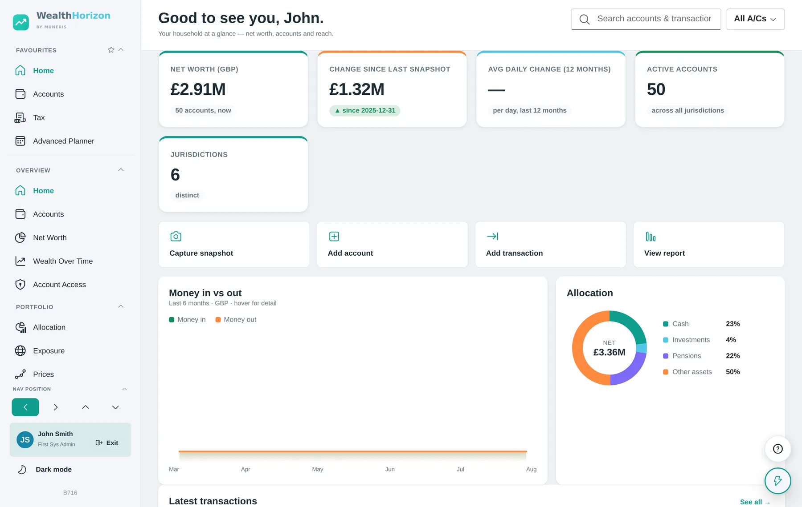
Editions
The four editions
Standard does what Microsoft Money did. Pro adds planning, tax and forecasting, which Money never did. Advisory is a different product altogether, for regulated firms, and it has its own section: The Advisory. Money Exporter is the converter, and it stands on its own: Money Exporter.
Money Exporter — get the data out, and stop there if you want
Money Exporter is a program of its own. It reads your old file and writes it out in a format something else can open. You do not need the rest of WealthHorizon to use it.
It reads .mny files, password-protected ones included, as well as Access,
QIF, OFX, QFX, QBO, CSV, Excel and text-based PDF statements. It writes CSV, Excel,
QIF, OFX, QFX, QBO, IIF, GnuCash, YNAB and a PDF statement. It works out the format
from the bytes in the file rather than the name on the end of it.
A .mny file says what each field is. A bank CSV says almost nothing, so some
of it has to be worked out — which column is the amount, whether
01/02 is January or February, whether money out is a minus. Each guess
is tested against the file’s own running balance, and it tells you whether it
came back verified or not.
It is a Windows program and a command line tool, and it runs on your machine. Nothing is uploaded. There is a trial, then a one-off licence that does not expire.
In Money Exporter
- Ten formats in — Money, Access, QIF, OFX, QFX, QBO, CSV, Excel and PDF statements.
- Ten formats out — CSV, Excel, QIF, OFX, QFX, QBO, IIF, GnuCash, YNAB and a PDF statement.
- Password-protected Money files, given the password.
- Every guess checked against the running balance in the file, and the result said out loud.
- A preview of what it found before anything is written.
- Splits and investments kept whole, not flattened into one line.
- Date ranges and a file per account, if that is what you need.
- Nothing uploaded. It runs on your own machine.
Standard — what Microsoft Money did, without the Windows
Standard is meant as a straight swap. If you kept your accounts in Money, the things you used every day are here. Same shapes, same headings.
Your old file comes across. WealthHorizon opens .mny and
.mdb/.accdb files directly, as well as QIF, OFX, CSV and
Excel. Before it saves anything, it shows you what it found: every account, with
the balance it worked out.
What Standard leaves out. The long-term planner, the month-end funding plan, share price forecasts, inheritance tax and the capital gains tools. Those are all in Pro. Nothing in Standard is cut down or time-limited. There is no cap on accounts, transactions or storage. The only limit is the size of your disk.
In Standard
- Accounts of every kind — current, savings, credit card, loan, mortgage, investment, pension, property, vehicle — each with its own country, currency and tax wrapper.
- The register with a running balance, splits, matched transfers, payees, categories, and arithmetic in the amount box.
- Repeating payments — weekly to yearly, with the month laid out as a calendar of what is due.
- Investments — holdings, lots, prices, dividends, share splits and an account’s own cash side.
- Reports under the same headings Money used: spending by category and by payee, one period against another, and account balances in detail.
- Imports from Money, QIF, OFX, Trading 212, Saxo, Barclays and any CSV or spreadsheet. You map the columns, and you see a preview before anything is saved.
- Exports to CSV, Excel, QIF and OFX, per account.
- Multiple currencies, with each entry keeping the rate it was converted at.
- Backups you can schedule, encrypt and restore.
- Documents filed against an account — statements, contract notes, certificates.
- A Money 2005 skin — the navy rail, the blue banner, squared corners and Tahoma. It sits beside light and dark as a third choice. The charts change colour with it, and nothing moves.
- Offline reading — what you have looked at stays on the device, with a line at the top saying when those figures were saved. Anything you change with no signal is held, then sent in order once you are back.
- Renewals that hold the policy — who it is with, the number, the cover, what it cost and who to ring. Paste in the insurer's letter and it fills them in.
- Nominees and readiness — name someone who can look at your accounts if you cannot. There is a waiting period and a code. There is also a checklist of what would be needed on the day.
- Household access — share an account with a partner, or give read-only access, and see who has looked at what.
What it looks like
The application, with a demonstration household loaded. Select an image to see it full size.
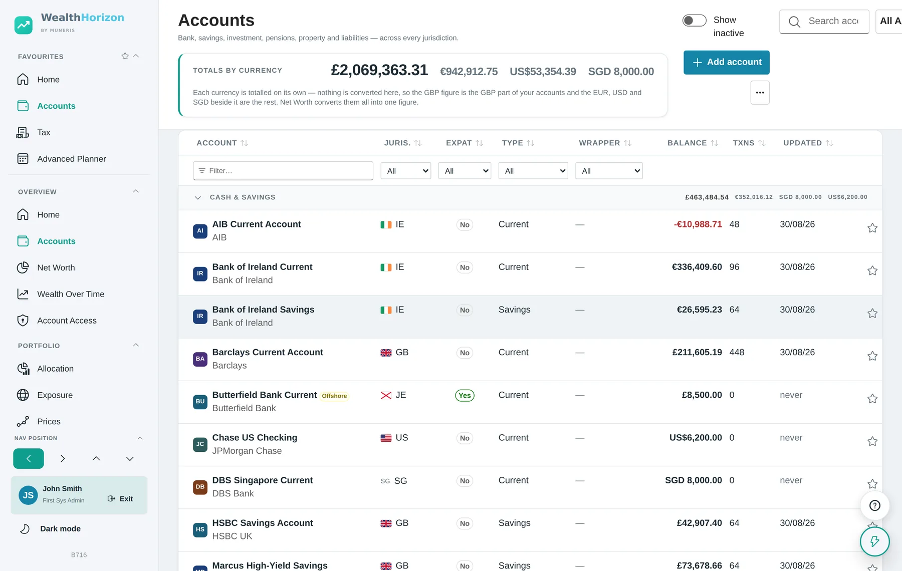
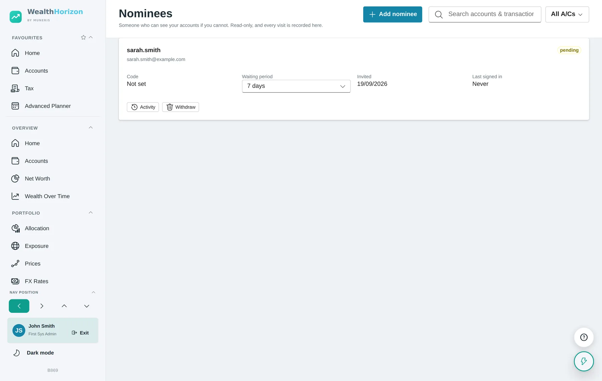
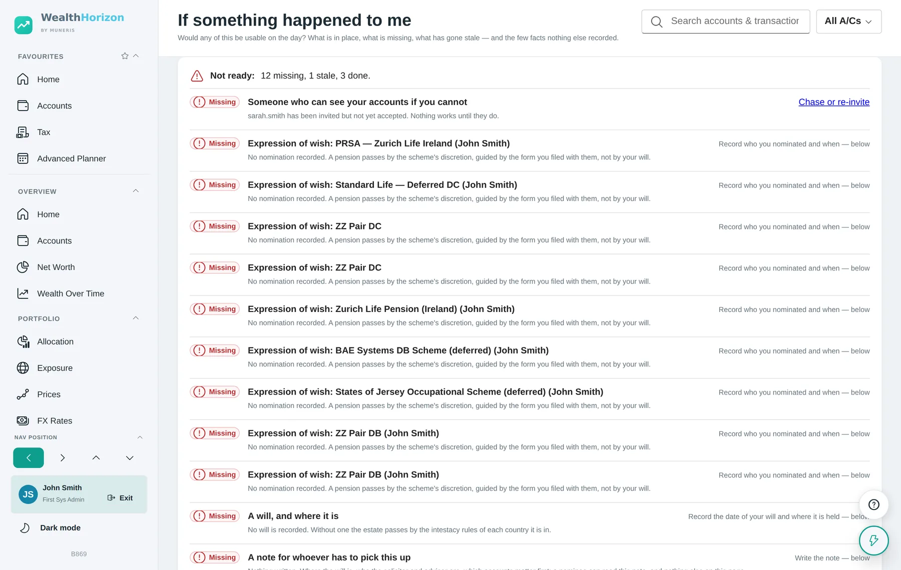
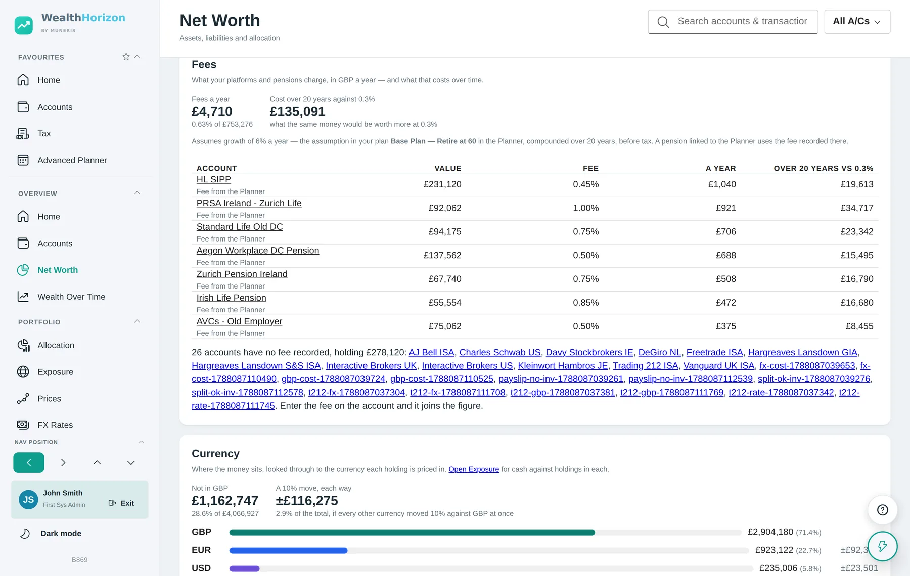
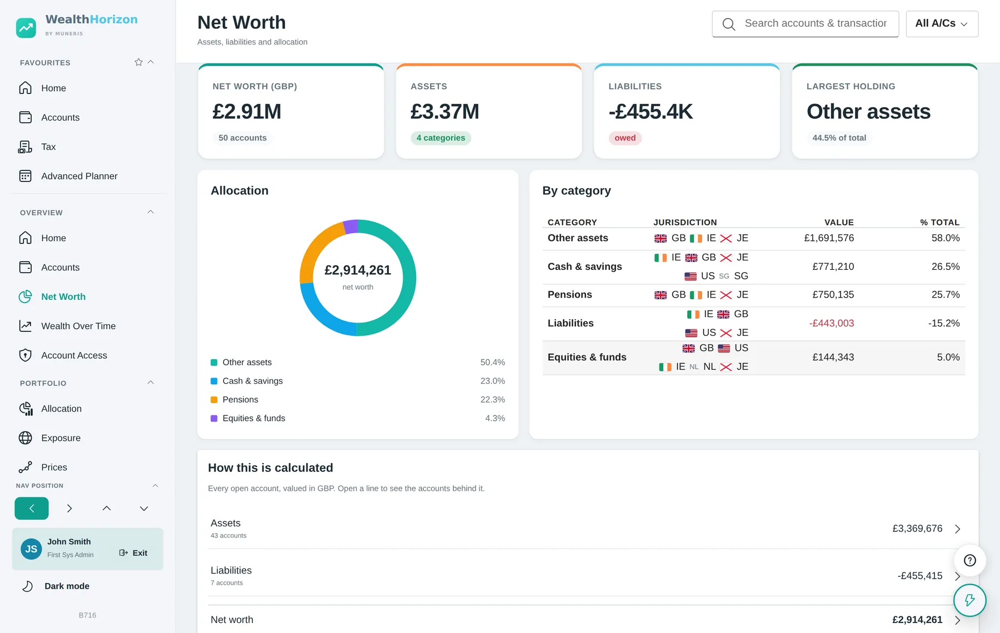
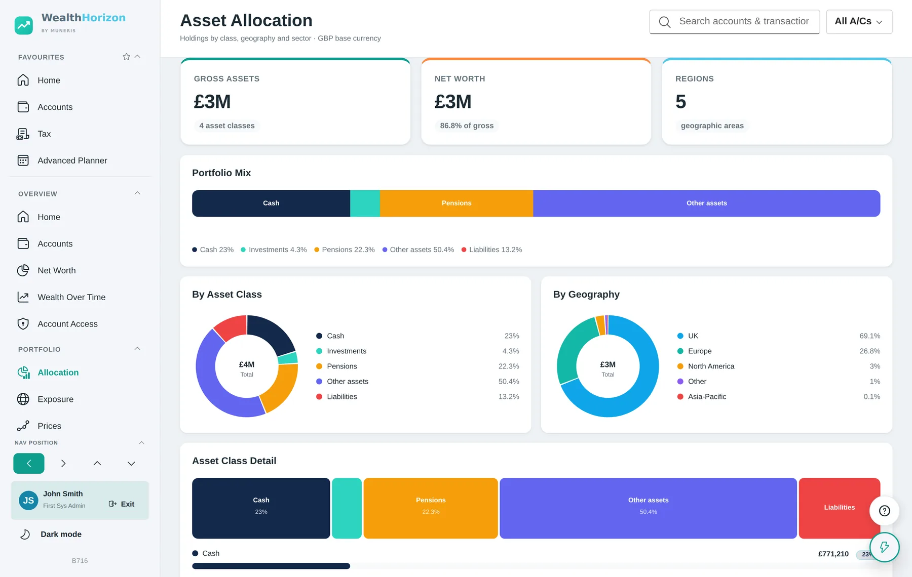
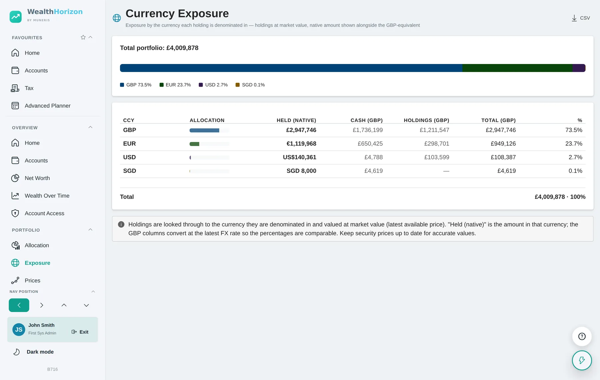
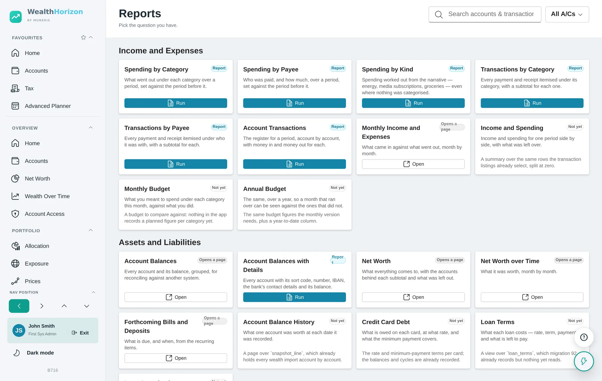
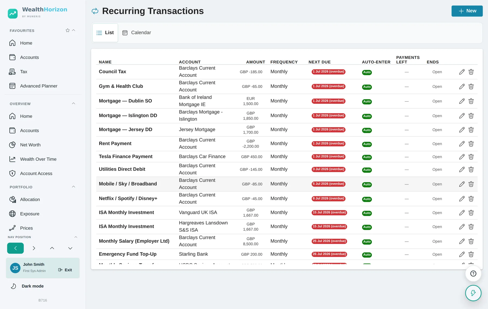
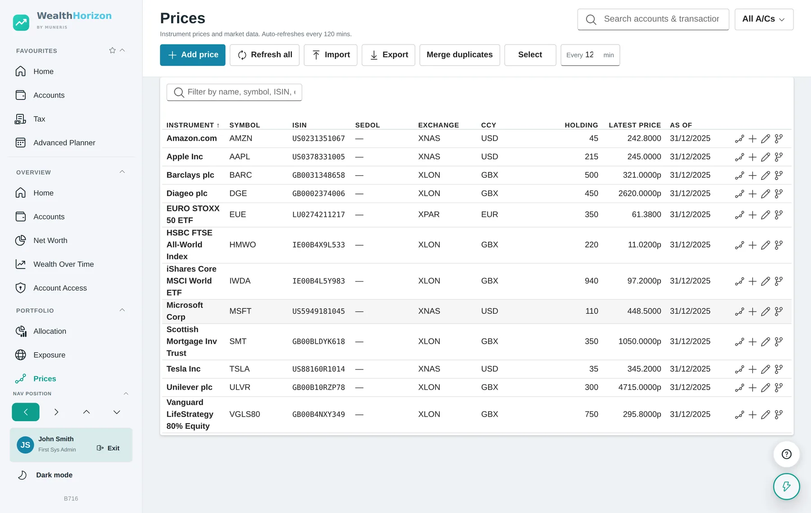
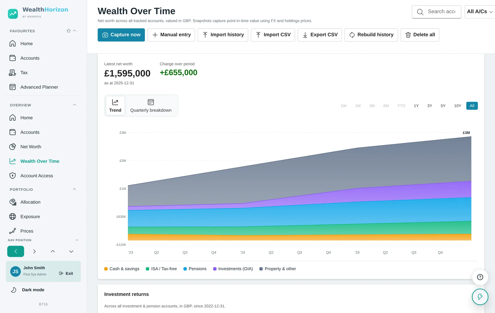
Pro — everything in Standard, and the questions Money could not answer
Money told you where you stood. Pro tells you where you are heading. Does the plan work? What does this month need? What might a holding be worth? What will the tax come to?
Long-term planning
Build a plan and see it year by year. Say what you want to live on. It works out how much of that your guaranteed income covers: state pension, defined benefit, earnings. Then it draws the rest from your pots, taking enough extra to pay the tax. It tells you the first year you fall short, when each pot runs out, and what is left at the end.
There are three outlooks and what-if scenarios. There is a Monte Carlo simulation, which gives you a range instead of one line. You decide the order you spend your pots in. That is a tax decision, not a sum.
Month-end planning
The month before it happens. One row per account: what it opens with, what comes in, what is due, its worst point, and whether it gets through. Then a worksheet of what to move from where. Each line says why that account was picked, and what else was considered. The transfers are grouped by the bank you log into, so you make one visit per login instead of one per payment.
Share price forecasting
A grid of what you expect each holding to be worth. Instruments down the side, dates across the top, a price in each cell. One growth rate across everything cannot tell one company from another. And an unlisted holding has no market price at all, so a forecast is the only price it will ever have. Import the spreadsheet you already keep, and export it back.
Inheritance tax and capital gains
An estate valuation with the nil-rate bands applied, and the sum shown line by line. A register of gifts against the seven-year rule. The options worth thinking about. For capital gains it uses FIFO, or the full UK matching rules: same day, then the next 30 days, then the pool. It brings in your unused losses and your allowance as well.
In Pro, in addition to Standard
- Advanced Planner — outlooks, what-if scenarios, Monte Carlo, pensions, income streams with start and end years, inflation and retirement spending.
- Planning wizard — it only asks the questions that apply to you, and fills in what it already knows from your accounts.
- FIRE mode — your FIRE number, savings rate, years to independence, Coast and Barista, and a bridge planner for the gap before pension access age.
- Roadmap and goals — your goals on a timeline, against the plan and against what you actually have. It puts a number on any shortfall.
- Month-end plan — the picture of the month, the transfer worksheet, the bank instruction list and a journal of what you decided to move.
- Monthly pack — where you stand, what is due and how the goals are going, in one run you can print.
- Price forecast — per instrument, per date, imported and exported as a spreadsheet.
- Estate & IHT planner — liability, nil-rate bands, the seven-year gift register.
- Capital gains — FIFO or full UK matching rules, plus an optimiser that finds loss-harvesting opportunities.
- Dividend tracker — income by security and by account, with withholding tax and the year-on-year change.
- Tax workspace — calculator, allowances used and remaining, up to three jurisdictions side by side, residency day counts.
- Cash flow forecast — twelve months of inflows and outflows from your repeating items.
- Rebalancing and exposure — drift against target, and what you are exposed to by currency, geography and sector.
- Connections — Open Banking and a read-only Trading 212 link, both optional.
- Pension calculator — two questions, answered from the pensions you already hold, shown year by year, with every pot behind the figure listed.
- Months of cover — your cash and savings against a month's outgoings, on the home page, with both figures written underneath.
- Irish deemed disposal — the charge that falls every eighth year, worked out for each holding.
- Tax inside the forecast — the real bands for each year and country. Capital gains on what you sell to live on. Dividend tax by band. A couple taxed as two people.
- Inheritance tax for every year — the estate, the nil-rate bands and their taper, business relief, unused pensions from 2027, and a gift plan with seven-year taper relief.
- Tax checks — a row per check, a column per year. You see a problem the year before it lands, not the year after.
- Scenarios — every assumption listed, with where it came from. One-click questions worked out from your own figures. A side-by-side comparison of lifetime tax and the first year you fall short.
- Plan against actual — freeze a forecast as a baseline and check it against your own snapshots, year by year and pot by pot.
- No storage cap — as with Standard, the only limit is the size of your disk.
- Alerts and data health — price thresholds, net-worth thresholds, overdue items, stale prices and missing rates.
What it looks like
The Pro tools, with a demonstration household loaded. Select an image to see it full size.
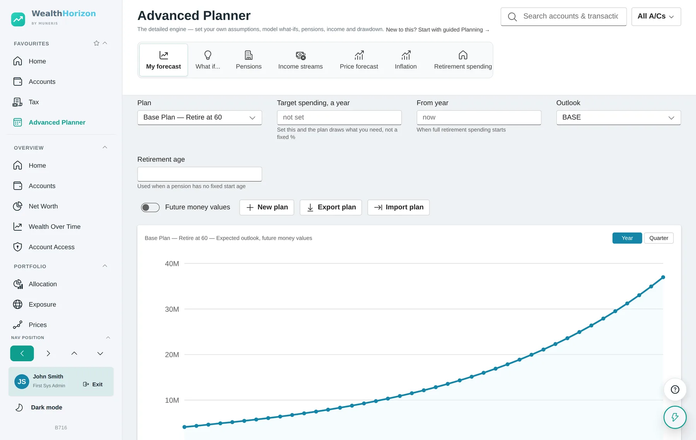
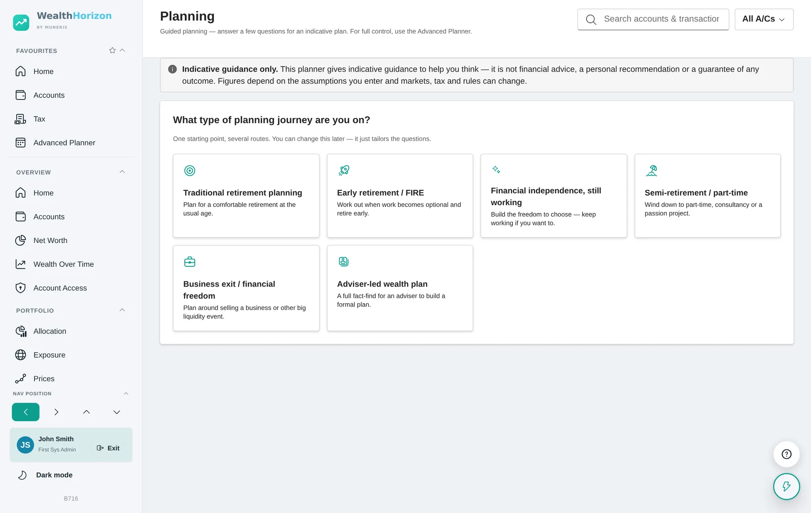
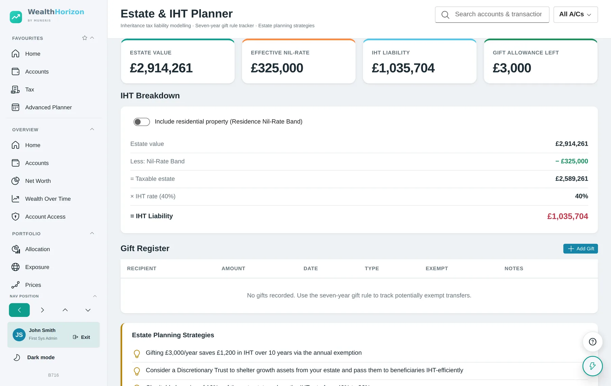
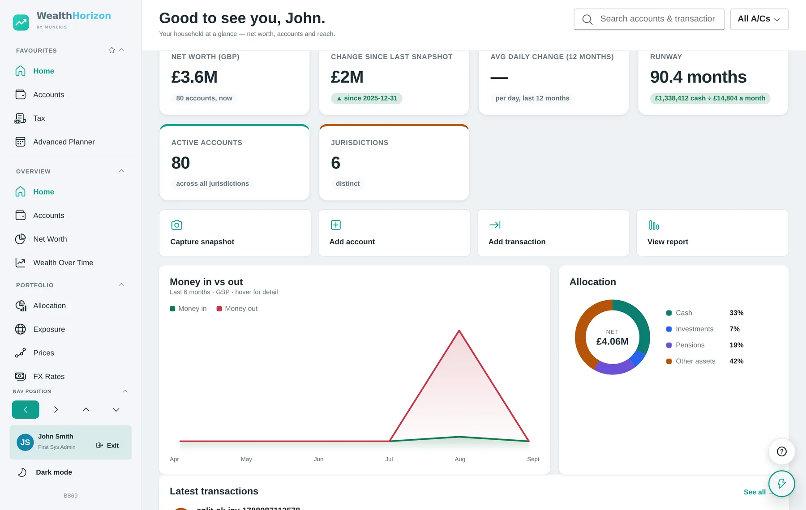
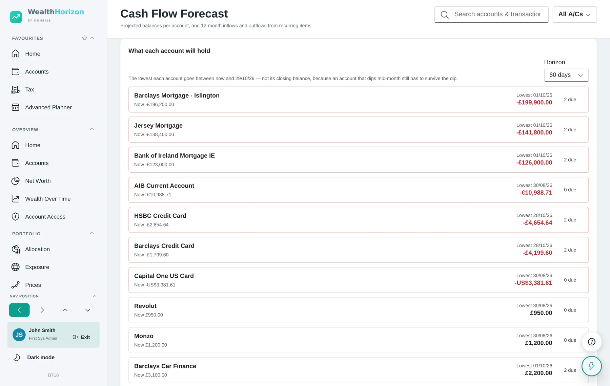
Advisory — a client book, and the records that go with it
The Advisory edition is for regulated firms. Every client gets the Pro product. The firm gets the layer above it. That means a management-information dashboard, a vulnerable customer register, fair value and charge assessments, suitability reporting, a firm hierarchy, and an audit trail nobody can edit.
It is built around the four outcomes in the FCA Consumer Duty: products and services, price and value, consumer understanding and consumer support. The Duty also asks a firm to watch for poor outcomes, act on them, and show that it did. That part is covered too.
The Advisory edition has its own section of this site, with detail on each module and screenshots of the advisory, compliance and firm-hierarchy views.
In Advisory, in addition to Pro
- Client book — step into a client's account. Every time you do, it is written to a log the client can read.
- Consumer Duty MI dashboard — outcomes, vulnerability, charges, reviews and complaints across the book.
- Vulnerable customer register — flag type, severity, support actions taken and review dates.
- Vulnerability scoring — an explainable score per client, with the contributing factors listed.
- Fair value and charge justification — value assessed by service tier and per client, RAG-rated.
- Annual review tracker — overdue, due soon and on track, with the review recorded when it is done.
- Risk assessment — an eight-question profile with a stated capacity for loss.
- Suitability reports — COBS 9.4 letters with a reference, written from the client's file.
- Board report — the annual attestation across the four Consumer Duty outcomes.
- FCA evidence export — a structured supervisory pack in JSON and CSV.
- Platform overview and firm hierarchy — adviser performance side by side, and rolled up through CEO, MD, VP, Manager and Adviser tiers.
- Audit log — who looked at or changed what, and when. Only compliance can open it.
- Client portal — a branded, expiring, read-only view you can send a client.
What it looks like
Demonstration data. There are more screenshots, and detail on every module, in The Advisory.
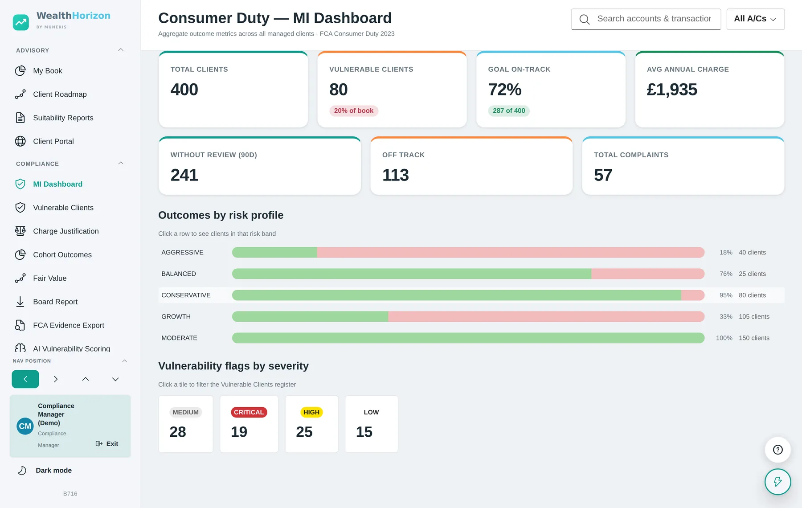
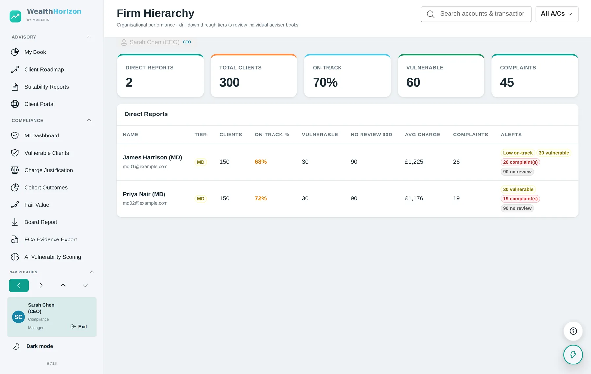
Money Exporter
A Money file you cannot open any more
Money Exporter opens it and saves it in a format something else can read. It is a separate program with its own licence. You can use it and never touch the rest of WealthHorizon.
Microsoft stopped selling Money in 2009. The file is still on your disk, and the figures are still
in it. There is just less and less that will open it. Money Exporter reads
.mny files, password-protected ones included. It also reads Access, QIF,
OFX, QFX, QBO, CSV, Excel and PDF statements with real text in them.
It writes CSV, Excel, QIF, OFX, QFX, QBO, IIF, GnuCash, YNAB and a PDF statement. Splits stay split. Investments keep their lots and prices. You see what it found, account by account, before anything is written.
Where it has to guess, it tells you. A bank CSV does not label the amount column.
It does not tell you whether 01/02 is January or February. So the program
checks each guess against the running balance in the file. The answer comes back
verified, partly verified, failed, or not available. “Not available” is
never dressed up as verified.
It is a Windows program, with a command line tool beside it. It runs on your own machine, and nothing is uploaded.
One off
A licence that does not expire
- Ten formats in, ten formats out
- Password-protected Money files
- Every guess checked against the balance in the file
- A preview before anything is written
- Splits and investments kept whole
- Windows app and a command line tool
- Runs on your machine, nothing uploaded
- A trial first, then one payment
Money Exporter is a converter. It does not keep your accounts for you. That is what Standard, Pro and Advisory are for.
Buy a licenceWhere it runs, and who can see it
Your data does not have to leave your building
You run it
You install every edition on your own hardware. The whole system is three containers: a database, an API and the web app. It will run on a laptop, a network drive at home, a server at the office, or any cloud you already use. There is nothing special about the hosting.
The only thing we run is a demonstration account, so you can look round before you install anything. The figures in it are made up. Your own records never touch our machines, on any edition.
It works offline
Market data, Open Banking and email are all optional. Set up none of them and it still works. Type prices and exchange rates in yourself, or import them. Nothing has to call home.
You can see who looked
If your account is linked to an adviser, the Account Access page lists who at the firm opened it, when, and in what role. Sharing your plan is a separate switch. You control it, and you can turn it off.
None of this is financial advice. The planning, tax and inheritance tax tools work out projections from what you type in. They are there to help you think. They are not advice, not a recommendation and not a guarantee. The application says so on the screens themselves: “Guidance, not advice. Check with an adviser before acting.” Tax rules change. Markets move. Your own position may turn on something the application cannot see. Get advice before you act on any of it.